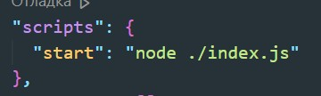
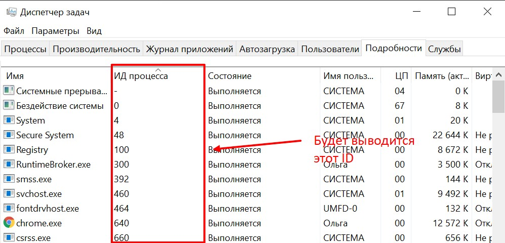
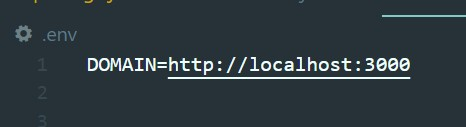
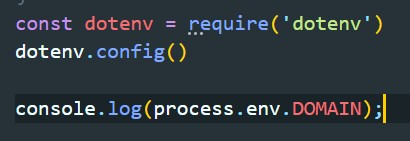
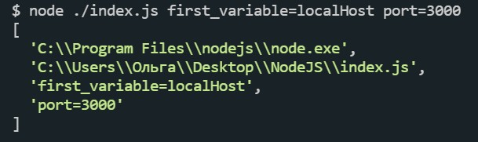

В консоле вводим npm init -y
Появится файл package.json в котором будех хранится информация о проекте, всключа список зависимостей пакетов. Так же в этом файле есть атрибут main в котором будет указано имя файла JavaScript, который бует являться точкой входа нашего приложения. Так же можно в разделе scripts создать новую запись (например назовем ее start) и там так же пропишем node ./index.js
Что бы запустить скрипт в консоле вводим node ./main.js или путь до запускаемого файла
Этот модуль доступен из глобальной области, т.е. не надо ничего импортировать
process.pid - выводить идентификатор процесса
process.env - с помощью env мы можем получить доступ к переменным окружения. Для этого в проекте создадим файл с именем .env В этом файле мы можем прописать какие либо переменные, например я создам переменную DOMAIN.
Теперь что бы иметь доступ к этип переменным нам необходимо установить пакет dotenv. После его установке в файле где мы хотим получать доступ к глобальным переменным мы импортируем dotenv и вызываем метод config. После этого мы обращаемся к переменной через process.env.<ИМЯ_ПЕРЕМЕННОЙ>
process.exit() - завершает работу приложения. Наример мы можем поставить какое-то условие и по этому условию завершать приложение
process.argv - argv будет содержать в себе те переменные которые мы передадим при запуске. пример:
